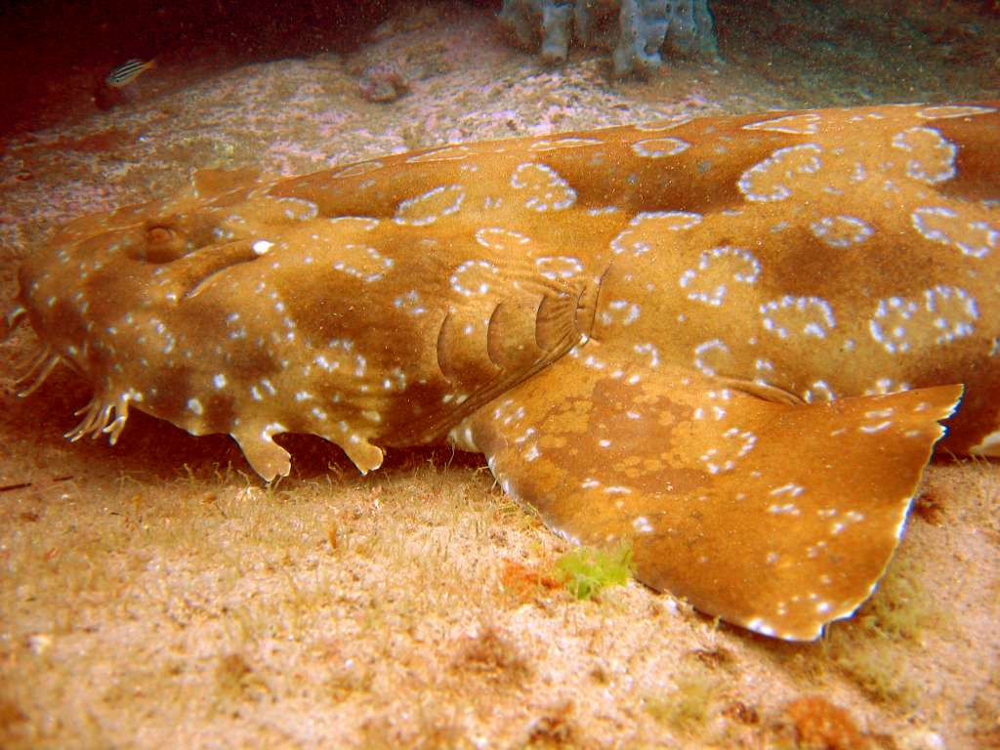
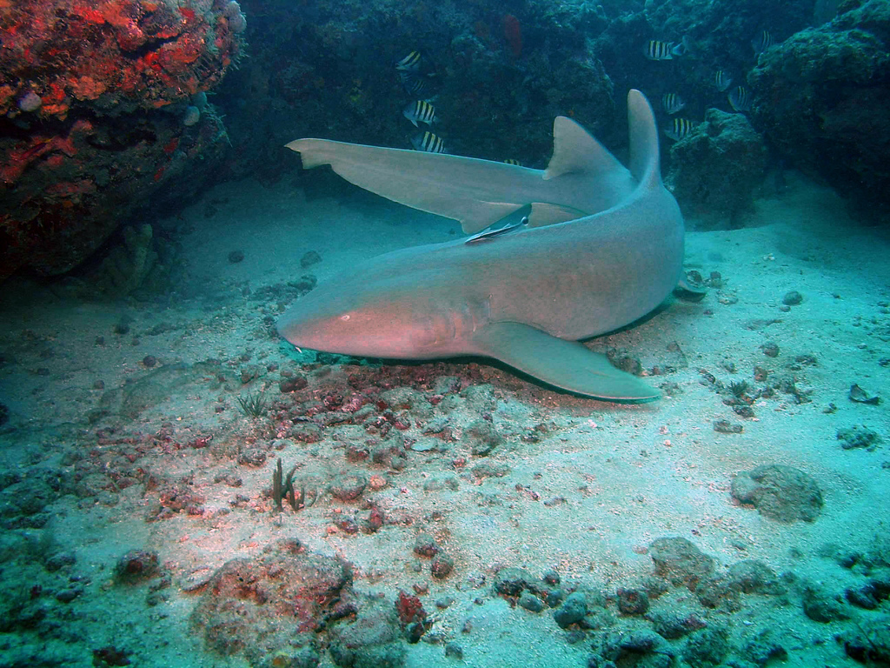
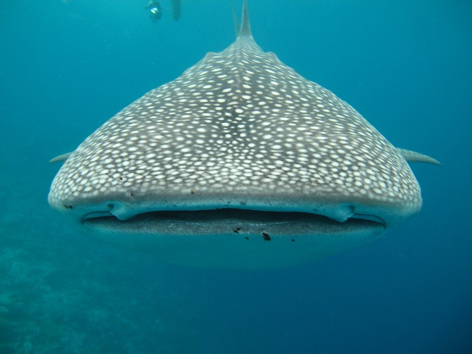

VOLVER
ORDEN
ORECTOLOBIFORMES
tiburón alfombra
eucrossorhinus dasypogon
Derechos de atribución de fotografías
author-page-licence
Wikimedia Commons
Wikipedia
CC BY-SA 3.0

Habita en el fondo , Australia, oceanos Índico y Pacífico. Su nombre proviene de su gran parecido a una alfombra además de estar siempre apostado en el fondo.Su alimentación se basa en crustaceos y pequeños peces que atrapa por el fondo.
tiburón nodriza
ginglymostoma cirratum
Derechos de atribución de fotografías
author-page-licence
Gary Rinaldi
Wikipedia
CC BY-SA 2.0

Hábita en los fondos marinos y suele medir hasta 4 metros .Puede llegar a encontrarse en mares tropicales. Se les conoce como peces gato.Su hábitat engloba desde aguas poco profundas , hasta los 2000 metros .Se alimentan de invertebrados y peces pequeños .
tiburón nodriza
tiburón ballena
rhincodon typus
Derechos de atribución de fotografías
author-page-licence

Ostenta el título de ser el pez más grande del mundo .con aproximadamente 12 metros de longitud.Se alimenta principalmente de fitoplactón y kril. También bancos de peces pequeños como son las sardinas, caballas, larvas etc. Hábita en los oceanos cálidos. Y es muy amigable con los humanos.
VOLVER